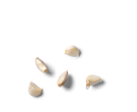

Italian chef’s blog The art of cooking
Best resipes ideas
by Nikollo Pianti

Italian cuisine — it is not just food, it’s an art that characterizes the atmosphere of the country, it’s traditions and the spirit of national character.
About
Nikollo Pianti is a famous Italian chef and restaurateur. He is at position № 1 among Top 10 chef in Italy. He’s the partner of Lusardi’s, a 5-Michelin-star restaurant situated in Catanzaro, Italy. In August 2019 Lusardi’s was positioned № 1 in The World’s 50 Best Restaurants Awards, got top appraisals from Barilla, Sentura Bosso and Prosciutto Cotto association. Also Nikollo is a writer of 14 top rated cookery books with Italian recipes.
N. Pianti brought up in the provincial town Ro in the North West. From childhood he got the chance to observe and learn the art of traditional Italian cooking, as his grandmother was a great cook. In 2018 Pianti was granted the Hospital Lifetime grant. Champs of this honor are praised for making critical obligations to the industry, which have had an outstanding effect, and act for the benefit of the progress of Italian cuisine.
Popular recipes
Spaghetti Puttanesca
Ingredients
-
500g tomatoes -
5 garlic cloves  -
120g olives -
1/2 small bunch of parsley -
1/2 tbsp peppers 2 1/2 tbsp salt 
-
1 onion -
1 small bell pepper -
400g fettuccine -
basil leaves
Method
-
Step 1
Heat the oil in a non-stick pan over a medium-low heat. Add the onion along with a generous pinch of salt and fry for 10 mins, or until soft. Add the garlic and bell pepper, cook for 2 mins.
-
Step 2
Stir the tomatoes and olives into the onion, bring to a gentle simmer and cook, uncovered, for 15 mins. Add herbes de provence.
-
Step 3
Meanwhile, bring a large pan of salted water to the boil. Cook the spaghetti following pack instructions, then drain and toss with the sauce, basil leaves and parsley.
Interview
Innovations and traditions
A conversation with Nikollo Pianti and Bianka Spinosa.
Chef Pianti began his career in the kitchen of a small cafe in northwestern Italy, run by his mother, and then moved to Rome and worked under the direction of the famous chef Georgio Notti. In the late 1980s, he opened a restaurant in Venice, but the business did not go well and had to be closed. Nicollo decided not to give up, and went to study with the masters of cooking. And so, in 2019, his restaurant Lusardi’s received 5 Michelin stars and won many other awards. Nicollo is now opening a new restaurant in the heart of Italy.
Bianka Spinosa If you had to describe your philosophy on cooking, what would you say?
Nikollo Pianti Combining traditions and searching for new combinations. I am constantly experimenting, mixing, may say, I invent new dishes. But sometimes, there is nothing tastier than my dear grandmother’s gnocchi!
(B.S.) Can you describe the moment when you learned that cooking — creating new recipes — is for you?
(N.P.) When in a restaurant, my first job, guests praised my food. This restaurant has become very popular, even famous in or town, I certainly think it was thanks to me (laughing). I knew the guests, tried to surprise them, and that’s how all started.
(B.S.) So why did your first restaurant close?
(N.P.) At that time, I was sure that I already knew everything, I cook better than all the chefs in the world. But in fact, I cooked the best only in my small town. I had to learn. And learn not only cooking, but management, business, finance and much more.
(B.S.) You probably have your own rules in the kitchen. Which ones are the strictest?
(N.P.) I would not say that I have my own rules. These are rather the generally accepted norms in good restaurants. Always be neat, leave personal problems outside the restaurant door, do not take them with you to the kitchen. And of course about the products: no unnatural, stale products, additives, chemicals. The most important thing for us is the quality of the food.
(B.S.) Recently you have published a new recipe book. I already bought it and even cooked some dishes, they are amazing! I cook rarely and I really liked that the recipes are easy and fast.
(N.P.) Oh, I’m so glad you liked it! In fact, it was intended, this is the main idea of the book. So that everyone can cook food like in a restaurant, without spending the whole day on cooking. The book was published quite recently, but we are already preparing a reprint, as many new recipes have appeared. And this time, we took into account the seasonality and add recipes for holiday dishes. I suppose, many housewives prepare for the holidays in advance. So take a note, don’t plan your Christmas menu until we release an update (laughing)!
(B.S.) Very soon you are opening a restaurant in Rome, the heart of Italy. Tell us if there will be new dishes on the menu, how will you surprise your guests?
(N.P.) If now I tell you how I am going to surprise, then at the opening nobody will be surprised (laughing)! Of course, new positions have appeared on the menu, my team and I are not standing at one place. I can only say that you will not try this anywhere. Come to our opening, we will wait for everyone!
Subscribe to our newsletter
and be the first to receive new recipes